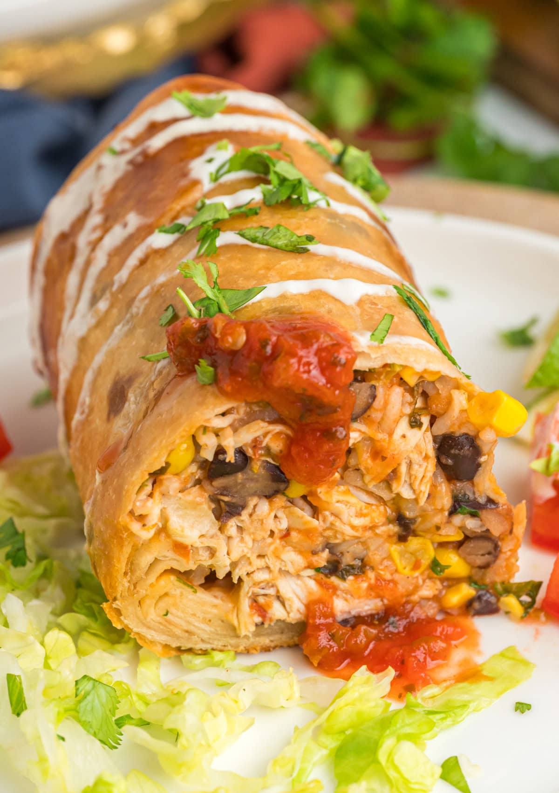

Chimichangas

Chicken and Mushroom Chimichangas
Moist chicken and earthy mushrooms combine with fresh green chiles and pepperjack cheese encased in a crispy tortilla. This is not Mexican food. It's a 100% American invention. The chimichangas are not deep-fried; they are pan-fried in a bit of oil. I like serving these with guacamole, sour cream, and salsa.
Ingredients
- 3 tablespoons vegetable oil, divided
- ½ cup diced onion
- ½ cup diced poblano peppers
- ½ cup sliced mushrooms
- salt and freshly ground black pepper to taste
- 12 ounces skinless, boneless chicken breast halves, cut into 1/2-inch cubes
- ¼ teaspoon ground cumin
- ¼ teaspoon ground chipotle pepper
- 1 pinch dried Mexican oregano
- 1 tablespoon water, or as needed
- 4 ounces shredded pepperjack cheese
- 1 pinch cayenne pepper, or to taste
- 4 large flour tortillas
- 1 large egg white, beaten
- ¼ cup guacamole (Optional)
- ¼ cup sour cream (Optional)
- ¼ cup salsa (Optional)
- ¼ cup cilantro leaves (Optional)
Directions
- Preheat oven to 400 degrees F (200 degrees C). Line a heavy baking sheet with parchment paper or a silicone baking mat.
- Heat 1 1/2 teaspoons vegetable oil in a heavy skillet over medium-high heat. Sauté onion, poblano peppers, mushrooms, salt, and black pepper until soft, about 5 minutes. Continue to cook until vegetables begin to brown, 5 to 10 minutes.
- Move vegetables to the edges of the skillet, leaving a space in the center. Drizzle 1 1/2 teaspoons vegetable oil into the center. Add chicken breast pieces to the center of the skillet and sprinkle with salt, black pepper, cumin, ground chipotle, and dried Mexican oregano. Cook and stir until chicken pieces are browned, about 5 minutes.
- Stir chicken and vegetable mixture together in skillet. Remove from heat. Drizzle water over chicken mixture and scrape browned bits off the bottom of pan with a wooden spoon. Transfer mixture to a bowl and set aside to cool.
- Add pepperjack cheese, stirring to combine. Season with salt, black pepper, and cayenne pepper.
- Place a heavy skillet over medium heat. When pan is hot, heat a tortilla in the skillet until warmed and flexible, about 30 seconds per side.
- Place tortilla onto a work surface and spoon 1/4 filling into the center of tortilla. Fold bottom of tortilla just over filling. Brush top and exposed parts of inside of tortilla with egg white. Fold right and left sides towards center like an envelope, enclosing filling. Roll tortilla over to fully enclose filling in a rectangular packet. Repeat with remaining tortillas and filling.
- Heat remining 2 tablespoons vegetable oil in heavy skillet over medium heat. Brown chimichangas on both sides in the hot oil until golden, 2 to 3 minutes per side. Transfer to prepared baking sheet.
- Bake in the preheated oven until tortilla is puffed up, golden brown, and the outside is crisp, 12 to 15 minutes. Spoon 1 tablespoon guacamole, 1 tablespoon sour cream, 1 tablespoon salsa, and 1 tablespoon cilantro onto each chimichanga.